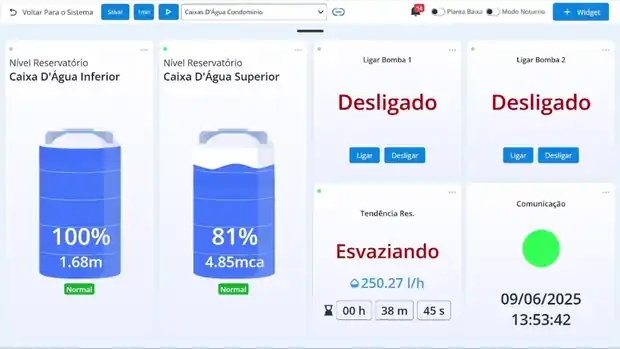

Nível dos reservatórios
Acompanhamento da condição de caixas-d'água, cisternas ou outros reservatórios definidos no projeto.
Nível baixo, abastecimento irregular, falha de bomba ou uma condição anormal podem passar despercebidos até virarem transtorno. Monitorar é transformar o que antes estava invisível em informação que pode ser acompanhada.
A proposta é entender como o abastecimento funciona no local, quais pontos precisam ser acompanhados e quais informações realmente ajudam quem cuida da operação.
Acompanhamento da condição de caixas-d'água, cisternas ou outros reservatórios definidos no projeto.
O projeto pode considerar estados e condições relevantes da operação das bombas, conforme a infraestrutura existente.
Eventos importantes podem ser transformados em avisos para que o responsável tenha informação para verificar e agir.
Uma tela de monitoramento pode reunir informações de reservatórios, condição das bombas, tendência e comunicação do sistema. A interface apresentada ao lado é um registro real do material técnico disponibilizado para esta página.

A solução precisa considerar o reservatório, a lógica de abastecimento, as bombas, o quadro e a forma como as pessoas responsáveis lidam com o sistema. Por isso, o diagnóstico vem antes da definição da implantação.
O monitoramento pode fazer parte de uma solução mais ampla de automação e proteção. O escopo depende da instalação existente e do diagnóstico técnico; monitoramento não substitui proteções elétricas adequadas nem elimina todas as causas possíveis de falta d'água.
Para apoiar síndicos, equipes e responsáveis no acompanhamento de sistemas de abastecimento.
Para imóveis em que reservatórios e bombas tenham papel relevante no abastecimento.
Para situações em que a continuidade e a visibilidade do abastecimento sejam importantes para a operação.
Descreva a situação para a Solarca. O primeiro passo é qualificar o problema antes de definir sensores, automação, alertas ou qualquer outro escopo.